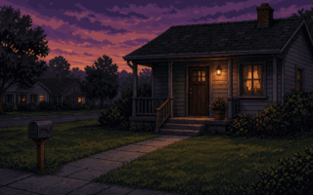
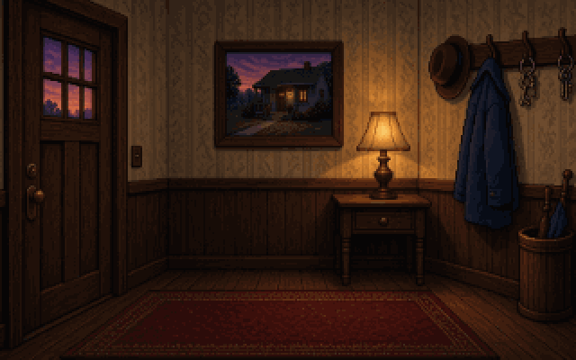

> Locked Out
About
A tiny adventure made in Adventure Game Studio. It's getting dark, you're stuck outside your own front door, and your keys are inside. Search the yard, use what you find, and get back in. The cat is not helping.
How to play
- Click the game first so it gets keyboard focus.
- Left-click to walk, talk, pick up and use things. Right-click to look at them.
- Move the mouse to the top of the screen to open your inventory. Pick an item, then left-click it on something to use it. Right-click drops it.
- F5 save, F7 load, F6/F8 quick save/load, F9 restart, Esc menu. Saves stay in this browser.
Screenshots


